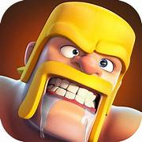

Free Fire is a popular battle royale game developed by Garena. In this game,
50 players are dropped onto an island where they must find weapons, vehicles,
and supplies to survive. The main goal is to be the last person or team standing.
The game is known for its fast-paced matches that last around 10 minutes, making it easy and fun to play even on mobile devices.
Players in Free Fire can choose different characters, each with unique abilities that help during battles.
The game also allows players to customize their outfits, weapons, and pets, which adds more excitement.
Free Fire is loved by millions around the world for its smooth gameplay, teamwork, and exciting graphics.
It has become one of the most downloaded and played mobile games globally.
Click me
PUBG
PUBG (PlayerUnknown’s Battlegrounds) is a famous online multiplayer battle royale game.
In PUBG, up to 100 players are dropped onto an island where they must collect weapons,
vehicles, and supplies to fight for survival. The main goal is to stay alive and be the last player or team remaining
The game combines shooting, strategy, and survival skills, making every match intense and exciting.
PUBG is known for its realistic graphics, large maps, and different game modes like solo, duo, and squad battles.
Players can communicate with teammates using voice chat, plan strategies, and explore various locations.
The game has gained huge popularity worldwide and has even inspired esports tournaments.
PUBG continues to entertain millions of players for its thrilling and competitive gameplay experience.
click me
LUDO
Ludo is a popular board game that can be played by two to four players. Each player has four tokens that must travel from the starting point to the home area by rolling a dice. The game is based on luck and strategy — players must decide when to move their tokens and when to block others. Ludo is simple, fun, and suitable for all age groups, making it a favorite family game.
In modern times, Ludo has also become a popular mobile game that people can play online with friends and family. The online version keeps the same rules but adds colorful graphics and new features like emojis and chat options. Ludo teaches patience, planning, and friendly competition, bringing people together for fun and entertainment.
click me
KING CARROM
Carrom is a popular indoor board game that is played on a square wooden board with small disks called carrom men. The main goal of the game is to use a striker to hit and pocket all your pieces before your opponent does. It can be played by two or four players and requires focus, skill, and accuracy. Carrom is loved by people of all ages and is often played at home, schools, and clubs for fun and relaxation.
The game also includes a special piece called the queen, which gives extra points when pocketed correctly. Players use strategies like controlling angles and power to pocket coins efficiently. Carrom helps improve hand–eye coordination and concentration while being enjoyable and competitive. Today, carrom is not only a fun pastime but also a recognized sport with national and international tournaments
click me
COC
Clash of Clans is a popular free-to-play mobile strategy game released by Supercell in 2012. The game takes place in a fantasy world where players become the chief of a village. Players are responsible for building and upgrading their own village using resources they gather. These resources are obtained through various means, such as by attacking other players' villages, earning rewards, or producing them within their own village.
A core feature of the game is the ability for players to form or join "clans" with up to fifty other members. These clans allow players to support one another by donating troops, offering advice, and, most importantly, participating in Clan Wars against other clans. Success in the game depends on effective resource management, a balanced base defense, and the development of offensive strategies, all of which are accelerated by active clan participation.

A Certificate of Conformity (CoC) is a document issued by a manufacturer or approved third-party organization to verify that a product meets specific safety, quality, and legal standards. This certification is crucial for international trade, as it provides official proof to customs authorities and buyers that the goods have been properly tested and adhere to the destination country's regulations. It helps streamline the customs clearance process and is mandatory for certain product categories, such as electronics, pharmaceuticals, and vehicles.
The issuance of a CoC offers significant benefits to businesses. It builds consumer trust by providing credible assurance of a product's reliability and safety, which in turn enhances brand reputation. The certification also helps mitigate risks, reducing the likelihood of costly product recalls, legal issues, or reputational damage associated with non-compliant goods. For manufacturers and exporters, a CoC is a key to gaining and maintaining market access, allowing for more efficient and confident trade operations.
clike me

.jpeg)
.jpeg)
.jpeg)